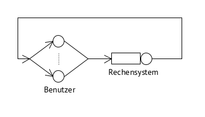

3.2.6
Zwanzig Benutzer arbeiten gleichzeitig an einem Rechensystem in einem Wechsel von „Denken“ und „Warten auf das Ergebnis“.
a) Skizzieren Sie die Situation in einem geeigneten Diagramm.

b) Die Denkzeit der Benutzer ist im Mittel 5 s und es wird ein Systemdurchsatz von 120 Aufträgen pro Minute gemessen. Wie groß ist die Antwortzeit des Rechensystems?
¯¯¯Z=5s;X=120min=2s;N=20
X=N¯¯¯V+¯¯¯Z⇒¯¯¯V=NX−¯¯¯Z=20120min−5s=5s
c) Wie viele Benutzeraufträge werden im Mittel gleichzeitig im Rechensystem bearbeitet?
¯¯¯¯Na=X⋅¯¯¯V=2s⋅5s=10
d) Wie viele Benutzer warten im Mittel gleichzeitig auf die Systemantwort?
¯¯¯¯Nw=¯¯¯¯Na=10
e) Wie viele Benutzer „denken“ gleichzeitig?
N−¯¯¯¯Nw=10